Sweep Options dialog box
- Sweep Type
-
- Single Path and Cross Section
-
Specifies that you want to use a single path and single cross section to create the swept feature.
The path and cross section can be open or closed.
Note:You can use the command bar to modify an existing single path and single cross section swept feature to add more paths or cross sections. For example, to add a cross section, select the feature, go to the Cross Section Step, and then click the Plane or Sketch Step button. To add more cross sections, you can then select a reference plane, sketch elements, or model edges.
- Multiple Paths and Cross Sections
-
Specifies that you want to use multiple paths and cross sections to create the swept feature. You can use up to three path curves and many cross sections.
-
After you define one or two paths, click the Next button on the ribbon bar to proceed to the cross-section step.
-
The cross sections can exist anywhere along the path, be all open or all closed and can be planar or non-planar.
-
A sweep path can consist of either tangent or non-tangent elements.
-
If you define a third path, the command automatically proceeds to the cross-section step.
Note:You cannot mix open and closed cross-sections.
-
- Part and Sheet Metal Dialog Box Options
-
The following dialog box options are available only when constructing swept features in the Part and Sheet Metal environments.
- Face Merging
-
Specifies the face merging option you want. If you change the face merging options on a swept feature after downstream features that depend on the original faces are constructed, the downstream features may not recompute properly.
The example illustrates no merge (1), full merge (2), and merge along path (3). Part Painter was used to change the surface color.
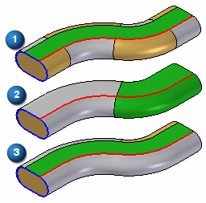
- No Merge
-
Does not merge the output faces.
- Full Merge
-
Merges as many faces as possible, given the input geometry.
- Along Path
-
Merges as many faces as possible along the path direction only, given the input geometry.
- Section Alignment
-
Specifies how the cross section profiles are oriented with respect to the path curves.
- Normal
-
Specifies that the cross section profiles maintain a fixed relationship with the normal plane of the path curve.
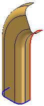
- Parallel
-
Specifies that the cross section profiles maintain a constant and parallel orientation to the cross section profile plane.
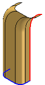
- Parametric
-
Varies the orientation of the cross section profiles so that points on the path curves are matched according to the proportional parameter distance of the underlying path curve. This option is only available when two or more path curves are defined.
Each path curve must be a single element. If the path curves you are using have more than one element, you can use the Single Curve option available with the Derived Curve command to create a single element path curve, or you can set the Arc Length option, described below.
This option can be useful when constructing swept features with two path curves and one cross section and you want the feature to extend to the end of both path curves. Notice the Parametric option (1) extends to the ends of both path curves, where the Normal option (2) stops short of the end of one of the path curves.
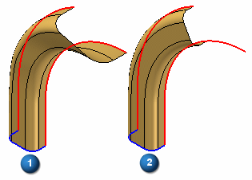
- Arc Length
-
Varies the orientation of the cross section profiles so that points on the path curves are matched according to the proportional arc-length distance along the path curves. This option is only available when two or more path curves are defined. You can use path curves that consist of a single element or multiple elements.
This option can be useful when constructing swept features with two path curves and one cross section and you want the feature to extend to the end of both path curves. Notice the Arc Length option (1) extends to the ends of both path curves, where the Normal option (2) stops short of the end of one of the path curves.
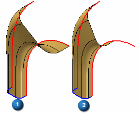
- Face Continuity
-
Specifies the degree of face continuity required where adjacent segments within a swept feature meet.
- Tangent Continuous
-
Specifies that adjacent sweep segments are tangent and continuous, but are not required to have the same radius of curvature.
- Curvature Continuous
-
Specifies that adjacent sweep segments are tangent, continuous, and have the same radius of curvature. This imparts extra smoothness to the surfaces and can be important when creating aesthetic surfaces.
- Scale
-
Constructs the swept feature by scaling the cross section curve along the path curve. These options are available only for single path and cross section sweeps after you select the path and cross section curves. You can specify a scale value for each end of the feature.
If you specify a scale value greater than 1, the swept feature is increased in size at the specified end of the feature. If you specify a scale value less than 1, the swept feature is decreased in size at the specified end of the feature. If you specify a scale value of 1, no scale is applied to the specified end of the feature.
The examples below illustrate (1): no scale, (2): start scale of 1 and an end scale of 1.5, (3): start scale of 0.5 and an end scale of 1.5.
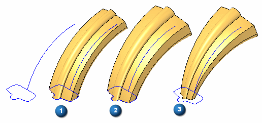
- Scale Along Path
-
Specifies that you want to scale the cross section along the path curve.
- Start Scale
-
Specifies the start scale value.
- End Scale
-
Specifies the end scale value.
- Twist
-
Constructs the swept feature by twisting the cross section profile around the path curve. These options are available only for single path and cross section sweeps after you select the path and cross section curves.
If you specify a number greater than zero, the twist is applied in a clockwise fashion from the start point of the path curve. If you specify a number less than zero, the twist is applied in a counter-clockwise fashion from the start point of the path curve. If you specify zero, no twist is applied.
- None
-
Specifies that no twist is applied to the feature.
- Number of Turns
-
Applies twist to the feature by specifying the number of turns the cross section is twisted along the entire path curve. The examples below illustrate (1): no twist, (2): 0.25 turns, (3): –0.25 turns.
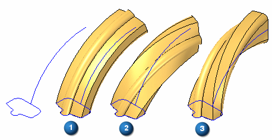
- Turns per Length
-
Applies twist to the feature by specifying the number of turns the cross section is twisted per unit of length of the path curve. The examples below illustrate (1): no twist, (2): 0.10 turns per 42 millimeters of path curve, (3): –0.10 turns per 42 millimeters of path curve. The overall length of the example path curve is approximately 84 millimeters.
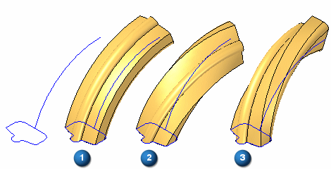
- Angle
-
Applies twist to the feature by specifying the degrees of twist at the path start and end points. The examples below illustrate (1): no twist, (2): zero twist at start point and 90 degrees twist at end point, (3): zero degrees twist at start point and –90 degrees twist at end point.
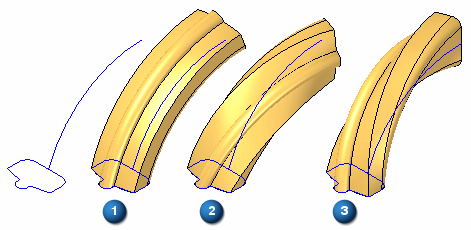
- Start Angle
-
Specifies the start twist value.
- End Angle
-
Specifies the end twist value.
Note:You can also combine scale and twist options. The examples below illustrate the different results possible when using (1): scale, (2): twist, (3): scale and twist.
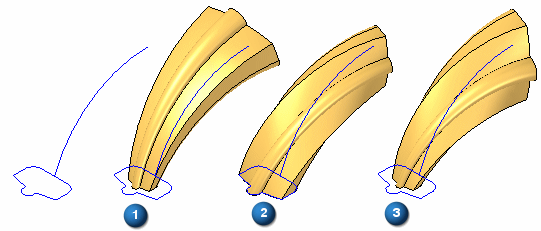
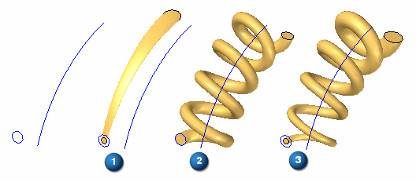
- Show This Dialog When The Command Begins
-
Displays the dialog box every time you select the command. If you do not want to display the dialog box when you select the command, clear this option.
Additional options
More options exist for Sweep.
When you create a swept surface using a closed profile, you can use the Open Ends and Close Ends options on the Swept command bar to specify whether the ends of the swept surface are open or closed.
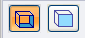
When you set the Close Ends option, faces are added to the ends of the feature to create a closed volume.
How do I
Construct a swept protrusion or cutoutConstruct a Solid Sweep Protrusion
Construct a Solid Sweep Cutout
Learn more
Constructing swept featuresLook up more details
Swept Protrusion commandSwept Protrusion command bar
Swept Cutout command
Swept Cutout command bar
Solid Sweep Protrusion command
Solid Sweep Cutout command
Solid Sweep Cutout command bar